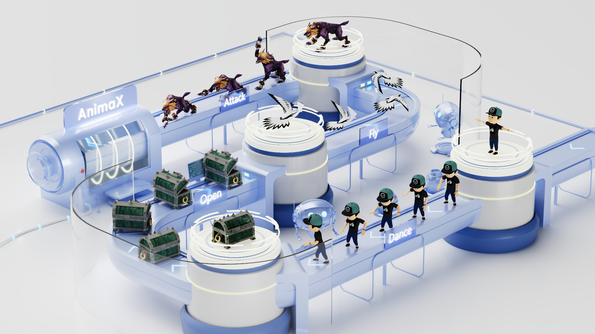
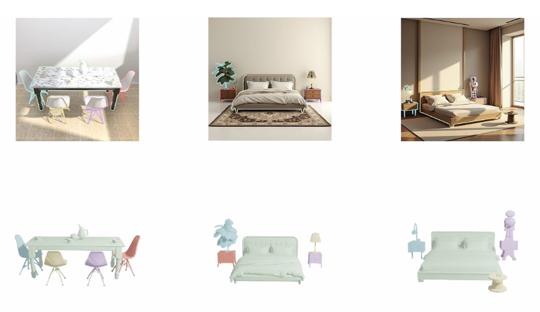

Zehuan Huang (黄泽桓)Beihang University
Email: huanngzh@gmail.com |
Biography
I am a master student in School of Software from Beihang University now, supervised by Prof. Lu Sheng.
My prior research focused on applying deep generative models to 3D asset creation, encompassing the generation of 3D objects, scenes, textures, and animations. My current research interests lie in interactive world models and simulation, including (i) Simulation-Ready 3D Generation and Reconstruction, (ii) Interactive World Modeling, and (iii) Native Multi-Modal Generative Models.
I am grateful to all my collaborators and mentors along the way. I first started doing research under the guidance of Prof. Miao Wang. Then I started working on deep learning related projects under the supervision of Prof. Lu Sheng. Besides, I also haved intern at MiniMax, Shanghai AI Lab, VAST, and Tencent Hunyuan3D, and I'm fortunate to have worked closely with Junting Dong, Yuan-Chen Guo, Yanpei Cao, Yang Li, Zhuo Chen, and Chunchao Guo.
I am always open to academic and industrial collaborations, if you share the vision, please do not hesitate to contact me!
News
- [2025-11] One paper Personalize Anything is accepted by AAAI 2026.
- [2025-11] One paper VoxHammer is accepted by 3DV 2026 as oral presentation.
- [2025-09] One paper AnimaX is accepted by SIGGRAPH Asia 2025.
- [2025-07] One paper Parts2Whole is accepted by TIP.
- [2025-06] One paper MV-Adapter is accepted by ICCV 2025.
- [2025-05] Open-source bpy-renderer, a python package for rendering 3D scenes and animations using blender.
- [2025-03] Two papers MIDI-3D and Ouroboros3D are accepted by CVPR 2025.
- [2024-07] One paper TELA is accepted by ECCV 2024.
- [2024-03] Invited talk at AnySyn3D on Compositional 3D Scene Generation (video).
- [2024-02] One paper EpiDiff is accepted by CVPR 2024.
Selected Publications
|

|
AnimaX: Animating the Inanimate in 3D with Joint Video-Pose Diffusion Models
SIGGRAPH Asia 2025
TL;DR: Animate any 3D skeleton with joint video-pose diffusion models.
|
|
|
MV-Adapter: Multi-view Consistent Image Generation Made Easy
ICCV 2025

TL;DR: Versatile multi-view generation with various
base models and conditions, and high-quality 3D texture generation.
|
|

|
MIDI: Multi-Instance Diffusion for Single Image to 3D Scene
Generation
CVPR 2025

TL;DR: MIDI-3D extends image-to-3D object generation
models to multi-instance diffusion models for compositional 3D scene generation.
|
* Equal contribution. † Project Lead. ✉ Corresponding author.
Selected Leading Projects

|
VoxHammer: Training-Free Precise and Coherent 3D Editing in Native 3D Space
Lin Li*, Zehuan
Huang*†, Haoran Feng, Gengxiong Zhuang, Rui Chen, Chunchao Guo, Lu Sheng✉
3DV 2026 Oral
TL;DR: A training-free 3D editing approach that performs precise and coherent editing in native 3D latent space instead of multi-view space.
|

Open-Source Projects


Selected Honors & Awards
- [2025] Shen Yuan Modal (highest honor for students in Beihang University)
- [2025] National Scholarship
- [2025] Outstanding Student Award, Beihang University
- [2024] National Scholarship
- [2024] Outstanding Student Award, Beihang University
- [2023] Outstanding Graduate Student of Beijing
- [2022] Outstanding Student Award, Beihang University
Educations
- Sept. 2023 - Jan. 2026, Master, Beihang University, Beijing. Supervised by Prof. Lu Sheng.
- Sept. 2019 - June 2023, Bachelor, Beihang University, Beijing.
Industrial Experience
- June. 2025 - Jan. 2026, Tencent Hunyuan, Beijing. Work on unified multi-modal models for 3D.
- Dec. 2023 - May 2025, VAST, Beijing. Work on 3D texture and scene generation.
- Aug. 2023 - Dec. 2023, Shanghai Artificial Intelligence Laboratory, Beijing. Work on object-level multi-view generation.
- May 2022 - June 2023, MiniMax, Beijing. Work on 3D avatar reconstruction, controllable image generation.
Services
Reviewer
ICLR, NeurIPS, CVPR, ICCV, ACM MM, AAAI, IJCV, TCSVTIn-School
2023 Fall ~ 2025 Spring, part-time technology counselor in School of Software, Beihang University2024 Spring, TA in Image Processing and Computer Vision, instructed by Prof. Lu Sheng